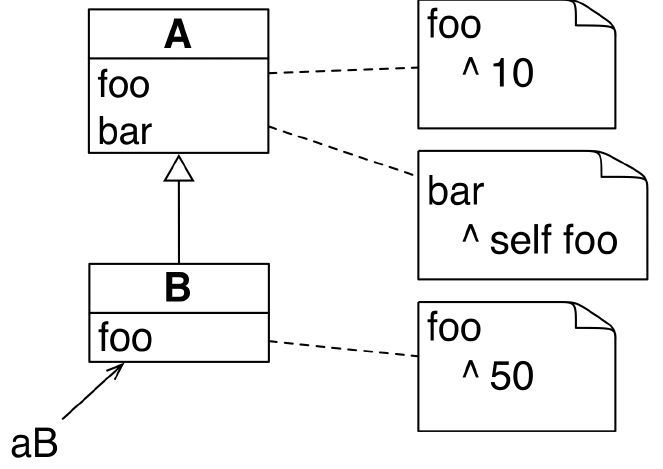
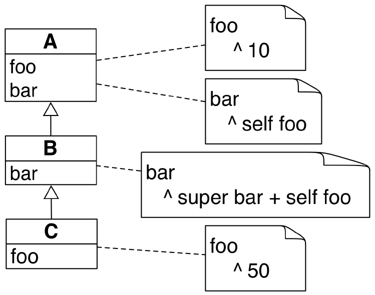

Pharo
Bazirano na Pharo MOOC
Prof. dr Igor Dejanović (igord at uns ac rs)
Kreirano 2019-03-26 Tue 22:29, pritisni ESC za mapu
Smalltalk
Smalltalk
Smalltalk is dangerous. It is a drug. My advice to you would be don't try it; it could ruin your life. Once you take the time to learn it (to REALLY learn it) you will see that there is still nothing out there that can quite touch it.
– Andy Bower
Šta je Smalltalk?
- Objektno-orijentisani dinamički reflektivni jezik.
- Xerox PARC - Alan Kay, Dan Ingalls i drugi - tokom 70-ih.
- Uticao na razvoj Actor model obrasca.
- Nastao pod uticajem Simule (prvi OO jezik, Norwegian Computing Center u Oslu - 60-te).
- Jedan od najuticajnijih jezika.
- Napredni koncepti: sve je objekat, razmena poruka, "živ" sistem, virtualna mašina.
- Konstrukcionistički pristup programiranju.
Istorijat
- Razvijen u par dana 1971 godine (Smalltalk-71) zbog opklade (Alan Kay).
- Kasnija verzija Smalltalk-72 je korišćena u istraživanjima.
- Smalltalk-76 - nasleđivanje klasa, razvojno okruženje
- Najpoznatija verzija Smalltalk-80 - meta-klase. Prva verzija dostupna van PARC-a (Apple, HP, DEC, UC Berkeley)
- Standardizovan - ANSI 1998
Smalltalk implementacije
- Komercijalne
- Smalltalk-80 (PARC)
- VisualWorks (ParcPlace Systems, prodato 1999 firmi Cincom)
- IBM VisualAge - napušteno u korist Jave. Današnji Eclipse je započeo kao VisualAge Smalltalk okruženje. Jedno vreme je i Java podrška bila implementirana u Smalltalk-u.
- FLOSS:
- Squeak (moderna verzija Smalltalk-80) - Apple -> Disney -> HP Labs -> SAP Labs -> Y Combinator
- Pharo - fork Squeak-a (2008) sa ciljem upotrebe u istraživanju i komercijalnim projektima (Pharo consortium, Pharo association)
- Amber Smalltalk - Smalltalk u JavaScipt-u
Familija Smalltalk i vezanih jezika
Pharo uvod
Pharo
- Pravi OO jezik ("sve je objekat") + IDE!
- Inspirisan Smalltalk-om
- Aktivna zajednica
- "Živ" sistem.
- Jednostavan i moćan objektni model
- Radi na Mac OSX, Linux, iOS, Android, Windows, Pi.
- 100% MIT
Pharo instalacija
- Preporučena upotreba Pharo Launcher alata
- Instalacija i upravljanje slikama i virtualnim mašinama
- Alternativno:
# 64bit version
mkdir pharo
cd pharo
curl -L https://get.pharo.org/64/ | bash
# or if curl is not available:
wget -O- https://get.pharo.org/64 | bash
# 32bit version
curl -L https://get.pharo.org | bash
# or if curl is not available:
wget -O- https://get.pharo.org | bash
Pharo fajl komponente
pharo Pharo7.0-32bit-890f474.sources Pharo.changes Pharo.image pharo-ui pharo-vm
pharo-vm- Pharo virtuelna mašina (OS-specific)Pharo.image- Perzistirano stanje/objektiPharo...sources- Izvorni kod izdanjaPharo.changes- Promene u izvornom kodu od početka upotrebe
Pharo.imageiPharo.changessu fajlovi gde dolazi do promenaPharo.changesse menja kada menjamo kodPharo.imagese menja kada eksplicitno tražimo perzistenciju stanja
Cela sintaksa
Staje na jedan slajd:
exampleWithNumber: x
"A method that illustrates every part of Smalltalk method syntax."
<menu>
| y |
true & false not & (nil isNil) ifFalse: [self halt].
y := self size + super size.
#($a #a "a" 1 1.0)
do: [ :each |
Transcript show: (each class name);
show: (each printString);
show: ' '].
^x < y
Model
- Dinamički tipiziran
- Sve je objekat tj. instanca klase
- Sve metode su javne i virtualne
- Svi atributi su zaštićeni
- Jednostruko nasleđivanje (Single inheritance)
Napisan u samom sebi
- Sve je napisano u Pharo!
Jednostavna sintaksa/model za pristup svemu.

Introspekcija
- Pharo nije "crna kutija".
- Sve što vidite su objekti sa kojima možete stupiti u interakciju i menjati ih "naživo".
Npr.
Alt+Shift+Click-> Halo hendleri!
Samo objekti, poruke…
- Objekti: mouse pointer, booleans, arrays, numbers, strings, windows, files, sound, url, socket, font, text, streams…
- Poruke (messages):
size,+,at:put:,do:,collect:,ifTrue:ifFalse:… - Poruke predstavljaju nameru (šta treba uraditi). Metode opisuju kako treba nešto uraditi.
- Objekat koji prima poruku zovemo prijemnikom (receiver).
… i blokovi (Block Closures)
- Blokovi su vrsta anonimnih metoda.
4 timesRepeat:
[ Transcript show: 'Hello World!']
- Blokovi se navode unutar
[].
Jednostavan, elegantan i uniforman model
- Sve je objekat tj. instanca klase.
- Klase i poruke su takođe objekti.
- Svo procesiranje se obavlja razmenom poruka (message passing) između objekata.
- Koristimo izraz slanje poruke jer:
- metode se određuju dinamički
- kasno povezivanje (late binding), samo virtuelni pozivi
- Postoji samo jedan mehanizam za pretragu metoda za sve objekte.
Pharo objektni model
- Atributi instanci (instance variables) su zaštićeni (protected):
- Privatni za objekat
- Dostupni podklasama
- Metode su javne (public) i virtualne.
- Jednostruko nasleđivanje klasa.
Slanje poruka
Date today
Date today + 3 days
2 + 3
(point1 x * point2 y) - (point1 y * point2 x)
Kreiranje objekata
Obavlja se slanjem poruke drugom objektu
10@20
Nova instanca klase Point se kreira:
- slanjem poruke
@ - objektu
10(SmallInteger) - sa argumentom
20(SmallInteger)
Kreiranje objekata - String
'Pharo', 'is cool!'
=> 'Pharo is cool!'
Novi string se kreira spajanjem dva stringa tako što:
- se šalje poruka
, - stringu
'Pharo' - sa parametrom
'is cool!'
Kreiranje objekata
Slanjem poruke new ili new: klasi
Monster new
=> aMonster
U prethodnom primeru Monster je ime klase a new je poruka koja se šalje ovoj
klasi. Rezultat je nova instanca klase Monster.
Kreiranje niza dužine 6.
Array new: 6
=> #(nil nil nil nil nil nil)
Slanjem poruke klasi izvšava se metoda klase (class method).
Tamagoshi withHunger: 10
Less is more!
- Bez konstruktora
- Bez statičkih metoda
- Bez deklaracije tipova
- Bez interfejsa
- Bez package/private/protected modifikatora
- Bez parametrizovanih tipova
- Bez boxing-a
- Ali i dalje vrlo moćan jezik!
Hello world
'Hello World' asMorph openInWindow
Šaljemo poruku asMorph stringu Hello World i dobijamo grafički element
(Morph). Dobijenom grafičkom elementu šaljemo poruku openInWindow da bi ga
prikazali u prozoru.
Primer - preuzimanje slike sa web-a
(ZnEasy getPng: 'http://pharo.org/web/files/pharo.png') asMorph openInWindow
ZnEasyje ime klase. Klase su globalno dostupe i nazivi počinju sa velikim slovom.getPng:je poruka koju šaljemo klasiZnEasy. Ova poruka ima argument. U ovom slučaju to je string'http://pharo.org/web/files/pharo.png'- Poruke koje imaju argumente se pišu sa
:na kraju naziva i mogu biti višesložne. Ovakve poruke nazivamokeyword message.
- Poruke koje imaju argumente se pišu sa
- Poruka
asMorphšalje se objektu koji vraća porukagetPng:. Ovo je obična unarna poruka bez argumenata. - Poruka
openInWindowse šalje objektu koji vraća porukaasMorph. - Ove dve unarne poruke se primenjuju s leva na desno.
Sintaksni elementi jezika
| Vrsta | Primer |
|---|---|
| Komentar | "Ovo je komentar" |
| Karakteri | $c $# $@ |
| String | 'Ovo je string' |
| Simbol (jedinstveni string) | #prvi #+ |
| Literal niz | #(23 56 89) |
| Integer | 45, 2r10100 |
| Real | 1.5, 6.03e-34, 4, 2.4e7 |
Sintaksni elementi jezika
| Vrsta | Primer |
|---|---|
| Boolean | true, false |
(instanca True i False) |
|
| Undefined | nil (instanca UndefinedObject ) |
| Point | 10@120 |
Osnovne jezičke konstrukcije
- Deklaracija privremene varijable:
| var | - Dodela vrednosti varijabli:
var := aValue - Separator iskaza:
obj1 message1. obj2 message2. - Povratak vrednosti iz metode:
^ aValue - Blokovi (leksička zatvorenja ili anonimne metode)
[ :x | x + 2 ] value: 5
=> 7
Poruke
Tri vrste poruka
Unarne poruke:
- Sintaksa:
receiver selector - Primeri:
9 squared Date today- Sintaksa:
Binarne poruke:
- Sintaksa:
receiver selector argument - Primeri:
2 + 3 3 @ 4- Sintaksa:
Keyword poruke:
- Sintaksa:
receiver key1: arg1 key2: arg2 - Primeri:
2 between: 10 and: 20 5 to: 10 do: [ :i | Transcript show: i ]- Sintaksa:
Prioriteti poruka
(Msg) > Unary > Binary > Keywords
Ova pravila redukuju potrebu za navođenjem zagrada.
Slanje unarne poruke
receiver selector
Primer:
10000 factorial
Šaljemo poruku factorial objektu 10000.
Slanje binarne poruke
receiver selector argument
Primer:
1 + 3
Šaljemo poruku + objektu 1 sa parametrom 3.
Slanje keyword poruke
receiver keyword1: arg1 keyword2: arg2
Ekvivalentno u Javi ili C-like jezicima:
receiver.keyword1keyword2(arg1, arg2)
Keyword poruke za Java programere
U Javi
postman.send(mail, recipient);
postman . send ( mail , recipient );
postman send mail recipient
postman send mail to recipient
U Pharo/Smalltalk-u
postman send: mail to: recipient
Primer: slanje HTTP zahteva
ZnClient new
url: 'https://en.wikipedia.org/w/index.php';
queryAt:'title' put:'Pharo';
queryAt:'action' put:'edit';
get
newje unarna poruka koja se šalje klasiZnClientqueryAt:put:je keyword poruka sa dva argumentagetje unarna poruka;je specijalan operator koji zovemo kaskada (cascade) - šaljemo poruku istom objektu primaocu.
Poruke su svuda
- Uslovi
- Petlje
- Iteracije
- Konkurencija
- …
Primer - Integer>>factorial
factorial
"Answer the factorial of the receiver."
self = 0 ifTrue: [^ 1].
self > 0 ifTrue: [^ self * (self - 1) factorial].
self error: 'Not valid for negative integers'
ifTrue:je poruka koja se šaljeBooleanobjektu koji vraća poruka=poslata objektuselfsa parametrom0.- Postoje i
ifTrue:ifFalse:,ifFalse:ifTrue:iifFalse: - Implementirane su u klasama
TrueiFalsei možete ih pročitati. Ne postoji ništa specijalno u vezi ovih poruka!
Kompozicija poruka - s leva na desno
Šta se dešava kada imamo sukcesivne poruke istog tipa?
1000 factorial class name
> 'LargePositiveInteger'
ekvivalentno je sa:
(((1000 factorial) class) name)
Prioritet primeri
(Msg) > unarne > binarne > keyword
2 + 3 squared
> 2 + 9
> 11
- Prvo unarna
squared - Zatim binarna
+
Prioritet primeri
2 raisedTo: 3 + 2
> 2 raisedTo: 5
> 32
- Prvo binarna
+ - Zatim keyword
raisedTo:
Prioritet primeri
Color gray - Color white = Color black
> aGray - aWhite = aBlack
> aBlack = aBlack
> true
- Prvo unarne
- Zatim binarne s leva na desno:
-pa onda=
Prioritet primeri
1 class maxVal + 1
> 1073741824
- unarna
class, unarnamaxVal, binarna+
1 class
> SmallInteger
1 class maxVal
> 1073741823
1 class maxVal + 1
> 1073741824
(1 class maxVal + 1) class
> LargePositiveInteger
Upotreba zagrada kod prioriteta
0@0 extent: 100@100 bottomRight
> Message not understood
> 100 does not understand bottomRight
Moramo koristiti zagrade:
(0@0 extent: 100@100) bottomRight
> (aPoint extent: anotherPoint) bottomRight
> aRectangle bottomRight
> 100@100
Cena jednostavnosti/uniformnosti
Samo poruke:
+- je poruka (nije operacija), ne postoji specijalno definisani prioritet
- možemo je redefinisati za različite domene
- Jednostavnost
- Ograničenje: nemamo definisan matematički prioritet operacija
Nema prioriteta aritmetičkih operacija
3 + 2 * 10
> 5 * 10
> 50
Moramo pisati sa zagradama:
3 + (2 * 10)
> 3 + 20
> 23
Nema prioriteta aritmetičkih operacija
1/3 + 2/3
> 7/3 /3
> 7/9
Moramo pisati:
(1/3) + (2/3)
>1
Sekvenca izraza
. je separator:
expression1.
expression2.
expression3
Primer:
Transcript cr.
Transcript show: 1.
Transcript show: 2
Sekvenca izraza
.je separator a ne terminacija.- Nema potrebe da se stavlja na kraju niza izraza.
- Ne stavlja se posle deklaracije privremenih promenjivih.
| macNode pcNode |
macNode := Workstation withName: #mac.
macNode sendPacket: 'Hello World'
Slanje više poruka istom objektu - kaskada (;)
|c|
c := OrderedCollection new.
c add: 1.
c add: 2
Ekvivalentno je sa:
OrderedCollection new
add: 1;
add: 2
add: 2se šaljem istom prijemniku porukeadd: 1a to je objekat vraćen porukomnew.
Blokovi
Blokovi izgledaju kao funkcije
fct(x) = x*x + 3
fct := [ :x | x * x + 3 ]
fct(2)
fct value: 2
Blokovi
- Anonimne metode
[ :each | Transcript show: each abs printString; cr ]
- Leksička "zatvorenja" (closures)
- Takođe su objekti:
- Mogu se proslediti kao argumenti poruka
- Mogu se dodeliti varijablama
- Mogu biti povratne vrednosti metoda
Upotreba blokova
#(1 2 -4 -86) do: [ :each | Transcript show: each abs printString; cr ]
> 1
> 2
> 4
> 86
- Pišu se unutar
[] - Mogu imati parametre - navode se kao simboli pre
|(:each) - U ovom primeru blok se evaluira za svaki element niza.
:eachdobija redom vrednosti niza. value:poruka se koristi za evaluaciju bloka.
Definicija bloka ne izvršava kod
(1/0)
-> Greška
Ali nema greške pri definiciji bloka:
- Definicija bloka ne izvršava kod
- Definicija bloka "zamrzava" izračunavanje definisano telom bloka.
[1/0]
> [1/0]
[1/0].
1 + 2
> 3
Izvršavanje blokova
Obavlja se eksplicitno slanjem poruke value.
[2 + 6] value
> 8
[1/0] value
> Error
Blok sa jednim argumentom
Blokovi mogu imati argumente (kao i metode):
[ :x | x + 2 ]
:xpredstavlja argument blokax + 2je telo bloka
[ :x | x + 2 ] value: 5
> 7
- Poruka
value:izvršava blok sa parametrom5.xdobija vrednost5za vreme izvršavanja bloka.
Vrednost evaluacije bloka
Evaluacija bloka vraća vrednost poslednjeg izraza u bloku:
[:x|
x + 33.
x + 2] value: 5
> 7
Blokovi se mogu sačuvati
- Blok se može sačuvati kao vrednost varijable
- Blok se može evaluirati više puta
| add2 |
add2 := [ :x | x + 2 ].
add2 value: 5.
>7
add2 value: 33
> 35
Blokovi mogu imati više argumenata
Primer:
[ :x :y | x + y ]
:x :y su argumenti bloka.
Kako se izvršava blok sa dva argumenta?
[ :x :y | x + y ] ??? 5 7
> 12
[ :x :y | x + y ] value: 5 value: 7
> 12
value:value:je poruka sa dva argumenta koja se šalje bloku sa parametrima5i7
Blokovi sa privremenim varijablama
Blokovi mogu definisati lokalne privremene varijable (kao i metode):
Collection>>affect: anObject when: aBoolean
self do: [ :index | | args |
args := ....
aBoolean
ifTrue: [ anObject do: args ]
ifFalse: [ anObject doDifferently: args ] ].
| args |definiše privremenu varijabluargsargspostoji samo za vreme izvršavanja bloka
Povratak iz bloka izaziva povratak iz metode
Kada se ^ izvrši unutar bloka dolazi do povratka iz metode u kojoj je blok
definisan:
Integer>>factorial
"Answer the factorial of the receiver."
self = 0 ifTrue: [ ^ 1 ].
self > 0 ifTrue: [ ^ self * (self − 1) factorial ].
self error: 'Not valid for negative integers'
0 factorial
>1
42 factorial
>1405006117752879898543142606244511569936384000000000
Dizajn saveti za upotrebu blokova
- Koristi blokove sa najviše 2 ili 3 parametra
- Definisati klasu umesto bloka za više parametara
Petlje i iteracije
Petlje su takođe implementirane kao poruke
1 to: 4 do: [ :i | Transcript << i ]
> 1
> 2
> 3
> 4
to:do:je poruka poslata broju (instanciIntegerklase)
Petlje su takođe implementirane kao poruke
- Mnoge druge vrste petlji:
timesRepeat:,to:by:do:,whileTrue:,whileFalse:…
4 timesRepeat: [self doSomething ]
0 to: 100 by: 3 do: [ :i | ... ]
- Možete lako napraviti novu vrstu petlje koja se neće razlikovati od sistemske.
whileTrue:
[ ... ] whileTrue: [ ... ]
Izvršava argument dok god je vrednost prijemnika true
Color >> atLeastAsLuminentAs: aFloat
| revisedColor |
revisedColor := self.
[ revisedColor luminance < aFloat ]
whileTrue: [ revisedColor := revisedColor slightlyLighter ].
^ revisedColor
whileTrue
Izvršava blok prijemnik sve dok je vrednost true:
[ ... ] whileTrue
Analogno, postoje i whileFalse i whileFalse:
Iteracije
Implementirane kao poruke.
Pitamo kolekciju da uradi iteraciju svojih elemenata:
#(1 2 -4 -86) do: [ :each | Transcript show: each abs printString; cr ]
> 1
> 2
> 4
> 86
Osnovne iteracije definisane nad kolekcijama
do:- iteracijacollect:- iteracija i mapiranje elemenataselect:- selekcija elemenata na osnovu predikatareject:- eliminacija elemenata na osnovu predikatadetect:- vraća prvi koji zadovoljava uslovdetect:ifNone:- vraća prvi koji zadovoljava uslov ili podrazumevanu vrednost ukoliko takvog nema u kolekcijiincludes:- test da li elemenat pripada kolekciji- … mnogi drugi
#(2 3 7) collect: [ :each | each raisedTo: 2 ]
> #(4 9 49)
#(2 9 7) detect: [ :i | (i \\ 3) = 0 ]
> 9
Interesantni primeri
3 timesRepeat: [ Transcript show: 'Hello' ; cr ].
Date now + 12 days.
Point linesOfCode.
Smalltalk allClasses size.
Smalltalk allClasses inject: 0 into: [ :sum :each | sum + each linesOfCode ].
VGTigerDemo runDemo.
SystemNavigation new browseAllSelect:
[:m| m primitive isZero and: [m pragmas notEmpty]].
- World - inspect (GTInspector settings, step update/refresh)
Bulovi izrazi i uslovi
Bulovi izrazi
trueje jedinstvena instanca klaseTruefalseje jedinstvena instanca klaseFalse- Klase
TrueiFalsenasleđuju klasuBoolean
U Pharo Bulovi izrazi nisu ništa specijalno:
& | notor:and:- lazyxor:ifTrue:ifFalse:ifFalse:ifTrue:- …
Eager i lazy evaluacija izraza
false & (1 error: 'crazy')
−> an error
Argument (1 error: 'crazy') se evaluira jer ova operacija ne koristi "lenju
evaluaciju" (lazy).
false and: [ 1 error: 'crazy' ]
−> false "no error!"
Argument [ 1 error: 'crazy' ] se ne evaluira jer nije neophodno za određivanje
vrednosti izraza - koristi se "lenja evaluacija".
Uslovi
U Pharo uslovi su poruke koje se šalju Bulovim vrednostima i blokovima.
ifTrue:ifFalse je poruka
Weather isRaining
ifTrue: [ self takeMyUmbrella ]
ifFalse: [ self takeMySunglasses ]
- Konceptualno
ifTrue:ifFalseje poruka koja se šalje objektu koji ima Bulovu vrednost (ili jetrueili jefalse). - Optimizovano od strane kompajlera.
ifTrue i ifTrue:ifFalse:
ifTrue: [] i ifTrue: [] ifFalse: [] su različite poruke.
forceItalicOrOblique
self slantValue = 0
ifTrue: [ slantValue := 1 ]
Analogno, ifFalse:[] i ifFalse: [] ifTrue: [] su različite poruke.
Uslovi: ifEmpty i ifNotEmpty:
Implementirano za kolekcije.
myProtocol
ifEmpty: [ 'As yet unclassified' ]
> 'As yet unclassified' ili myProtocol
Implementacija:
Collection>>ifEmpty: aBlock
^ self isEmpty
ifTrue: [ ^aBlock value ]
ifFalse: [ self ]
self listItems
ifNotEmpty: [ :aList | aList at: index ]
> element liste na indeksu "index" ili sama lista ukoliko je prazna
Implementacija:
Collection>>ifNotEmpty: aBlock
^self isEmpty
ifTrue: [self]
ifFalse: [aBlock cull: self]
Klase i metode
System Browser

Kreiranje klase

Kreiranje klase
Slanje poruke nadklasi
Object subclass: #Point
instanceVariableNames: 'x y'
classVariableNames: ''
package: 'Kernel-BasicObjects'
Definicija metoda
- Metode su javne (public)
- Metode su virtualne (tj. pronalaze se u vreme izvršavanja)
- Podrazumevano vraćaju
self
messageSelectorAndArgumentNames
"comment stating purpose of message"
| temporary variable names |
statements
Primer definicije metode

Metoda podrazumevano vraća self
Game >> initializePlayers
self players
at: 'tileAction'
put: ( MITileAction director: self )
je ekvivalentno sa:
Game >> initializePlayers
self players
at: 'tileAction'
put: ( MITileAction director: self ).
^ self "<−− optional"
Metode klase

- Dugme
Classsluži za pregled i definiciju metoda klase. - Metode na nivou klase. Odgovor na poruke koje se šalju klasi.
Point class >> x: xInteger y: yInteger
"Answer an instance of me with coordinates xInteger and yInteger."
^ self basicNew setX: xInteger setY: yInteger
yourself
Problem
Dodajemo 2 u skup:
Set new add: 2
>2
Rezultat izraza je 2 a ne skup!
Zašto?
Set>>add: newObject
"Include newObject as one of the receiver's elements, but
only if not already present. Answer newObject."
[...]
^ newObject
- Metod
add:vraća argument a ne objekat
Set new add: 2
>2
Moguće rešenje
|s|
s := Set new.
s add: 2.
s
Kraće rešenje - yourself
Object >> yourself
^ self
Set new
add: 2;
yourself
> aSet
- Poruke
add:iyourselfse šalju skupu - kaskada
;vraća objekat koji vraća porukayourself- u našem slučaju skup.
Česta greška
Counter class >> withValue: anInteger
self new
value: anInteger;
yourself
Counter withValue: 10vraćaCounterklasu umesto njenu instancu.
Zašto?
Counter class >> withValue: anInteger
self new
value: anInteger;
yourself
je ekvivalentno sa:
Counter class >> withValue: anInteger
self new
value: anInteger;
yourself.
^self
Gde je self prijemnik poruke withValue: tj. klasa Counter.
Rešenje
Counter class >> withValue: anInteger
^self new
value: anInteger;
yourself
Nasleđivanje i pretraga metoda (Method Lookup)
Osnove
Podklasa:
- Može da doda stanje i ponašanje
- Može da koristi stanje i ponašanje nadklase
- Može da izvrši specijalizaciju i redefiniciju ponašanja nadklase
Koren hijerarhije nasleđivanja
- Možemo smatrati da je klasa
Objectkorenska klasa svake klase. - Postoji i klasa
ProtoObjectali je njena upotreba specijalna pa je nećemo razmatrati.

Osnove nasleđivanja
Nasleđivanje je:
- Statičko za stanje (u vreme definisanja klase).
- Dinamičko za ponašanje (u vreme izvršavanja).
Nasleđivanje varijabli instanci klasa
- Dešava se za vreme definicije klase.
- Izračunava se na osnovu:
- Varijabli posmatrane klase.
- Varijabli svih nadklasa.
Nasleđivanje ponašanja
- Dešava se u vreme izvršavanja
- Metoda se traži:
- Počevši od klase objekta prijemnika
- Zatim u svim nadklasama uz lanac nasleđivanja.
Slanje i obrada poruka
Obrada poruke se obavlja u dva koraka:
- Pretraga odgovarajuće metode.
- Izvršavanje metode na objektu prijemniku.

Semantika self ključne reči
selfključna reč se koristi u implementaciji metoda i uvek predstavlja objekat prijemnik.

- Šta je rezultat izraza
A new fooa šta izrazaB new foo? - Šta je rezultat izraza
A new bara šta izrazaB new bar?
Semantika super ključne reči

superpredstavlja objekat prijemnik ali pretraga poruka započinje u nadklasi klase u kojoj sesupernalazi.- Šta su rezultati izraza
A new bar,B new bariC new bar?
self se određuje dinamički
U metodi A>>bar kod ^self foo ne znamo do vremena izvršavanja na koji foo
se poziv odnosi. To zavisi od klase konkretnog objekta prijemnika.
super se određuje statički
- U vreme kompajliranja znamo da metoda
B>>fooreferenciraA>>fooputemsuper. - Uvek počinjemo pretragu u nadklasi klase koja sadrži metodu koja koristi
super.
Poruke koje nemaju odgovarajuću metodu
- Ukoliko metoda nije pronađena standardnim mehanizmom pretrage, prijemniku se
šalje poruka
doesNotUnderstand - Podrazumevana implementacija u
Objectklasi signalizira izuzetakMessageNotUndertood.

Implementacija Boolean tipa
Implementacija Boolean tipa
U Pharo Boolean tip ima odličan dizajn:
&, |, not- eageror:, and:- lazyifTrue:, ifTrue:ifFalse, ...
Za razmišljanje
U svetu gde imate samo dve vrednosti: true i false i razmenu poruka
- kako implementirati
not? - kako implementirati
or?
not
false not
> true
true not
> false
Bez upotrebe uslova
Rešenje ne koristi uslove.
Uslovi bi svakako morali da budu bazirani na Bulovom tipu.
Rešenje koristi tri klase
Boolean(apstraktna),TrueiFalsetrueje singlton instanca klaseTruefalseje singlton instanca klaseFalse

Kako iskazujemo izbor u OOP?
U OOP, izbor iskazujemo:
- Definisanjem klasa sa kompatibilnim metodama
- Slanjem poruke instanci takve klase
Primer:
x open
xmože biti fajl, prozor, alat…- Metod se selektuje u zavisnosti od klase objekta
x - U Python-u poznato kao Duck Typing
Implementacija not operacije
False >> not
"Negation −− answer true since the receiver is false."
^ true
True >> not
"Negation −− answer false since the receiver is true."
^ false
Hijerarhija implementacije
Pretraga poruke (message lookup) je izbor prave metode

Implementacija Boolean klase
Booleanje abstraktna klasa- Podklase su
TrueiFalsekoje implementiraju:- logičke operacije
&inot - kontrolne strukture
and:,or:,ifTrue:,ifFalse:,ifTrue:ifFalse:,ifFalse:ifTrue:
- logičke operacije
Boolean>>not
"Abstract method. Negation: Answer true if the receiver is
false, answer false if the receiver is true."
self subclassResponsibility
Ponašanje Or operacije
true | true −> true true | false −> true true | anything −> true
false | true −> true false | false −> false false | anything −> anything
Implementacija Or operacije u Boolean klasi
Boolean >> | aBoolean
"Abstract method. Evaluating Or: Evaluate the argument.
Answer true if either the receiver or the argument is true."
self subclassResponsibility
Implementacija Or operacije u klasi False
false | true −> true false | false −> false false | anything −> anything
False >> | aBoolean
"Evaluating Or −− answer with the argument, aBoolean."
^aBoolean
Implementacija Or operacije u klasi True
true | true −> true true | false −> true true | anything −> true
True >> | aBoolean
"Evaluating Or −− answer true since the receiver is true."
^true
A pošto je prijemnik true možemo uraditi sledeće:
True >> | aBoolean
"Evaluating Or −− answer true since the receiver is true."
^self